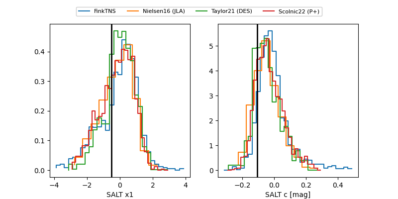

FINK: ZTF25ablyfqn
Lasair: ZTF25ablyfqn
ALeRCE: ZTF25ablyfqn
TNS: 2025wcb
YSE: 2025wcb
ZTF25ablyfqn (ztf,fink)
2025wcb (tns,yse)
equatorial (ra, dec) = (310.2826,+15.58500)
galactic (l, b) = (60.2373,-15.80192)

last atlasc=19.47, atlaso=19.51, ztfg=19.37, ztfr=19.25
1 atlasc, 3 atlaso, 9 ztfg, 9 ztfr detections